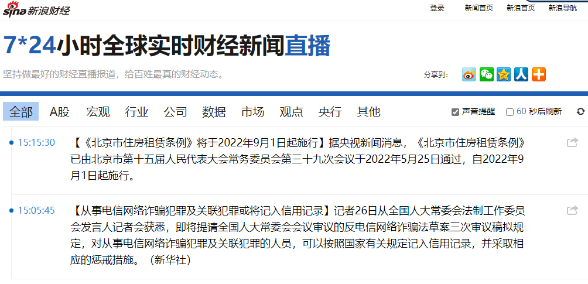
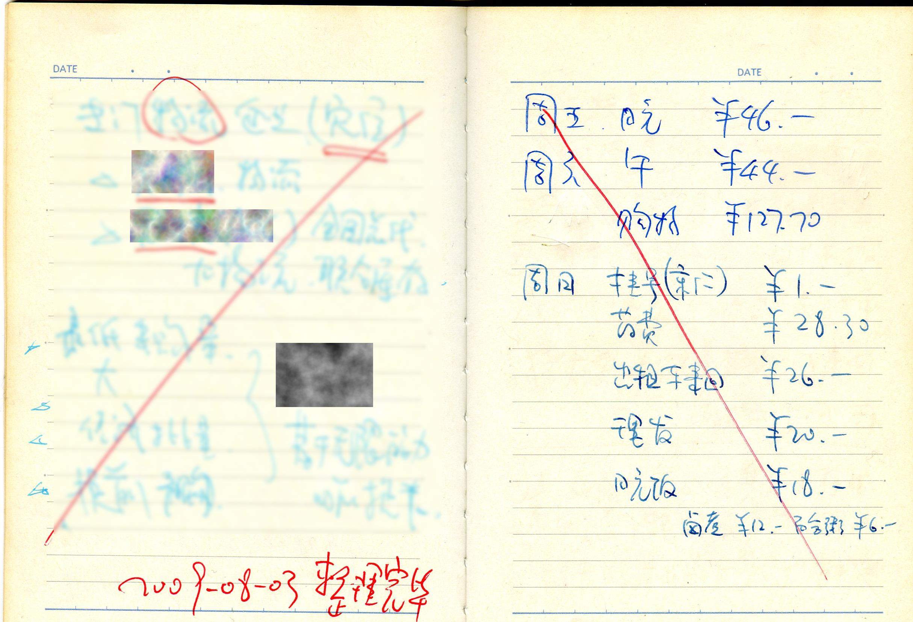
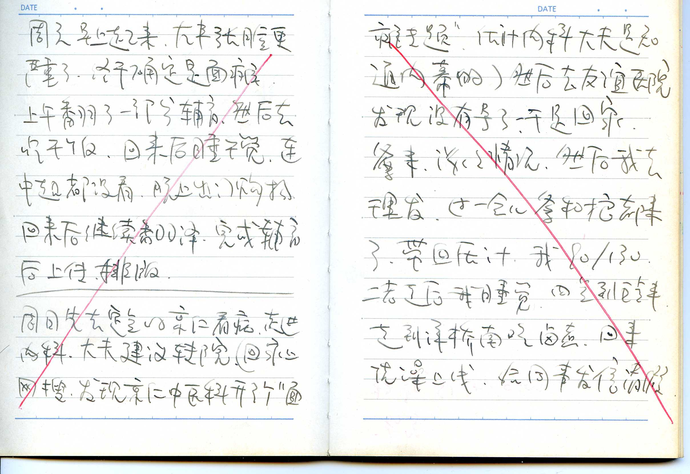
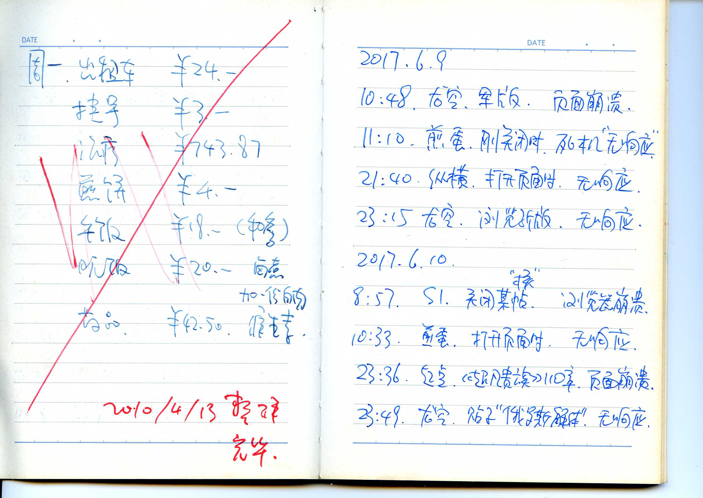
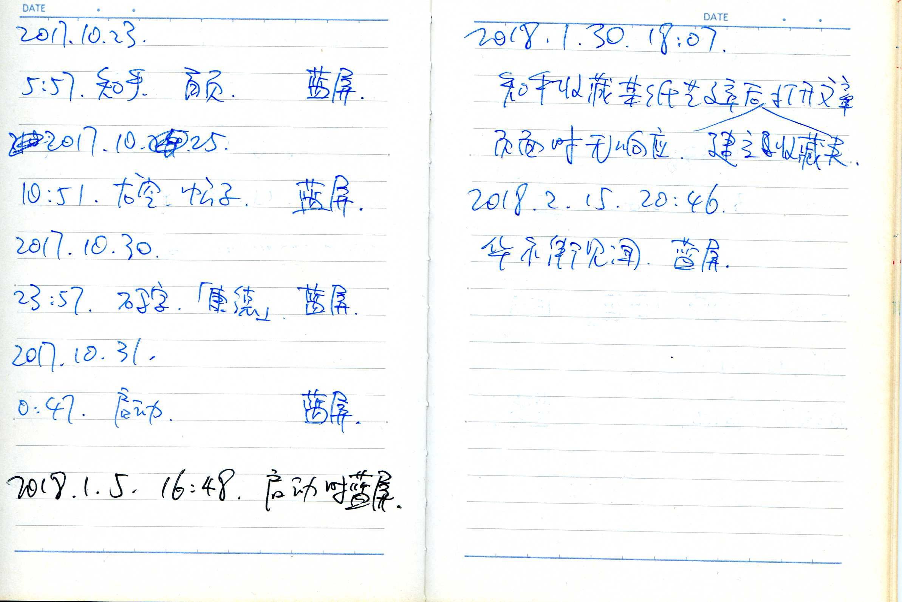
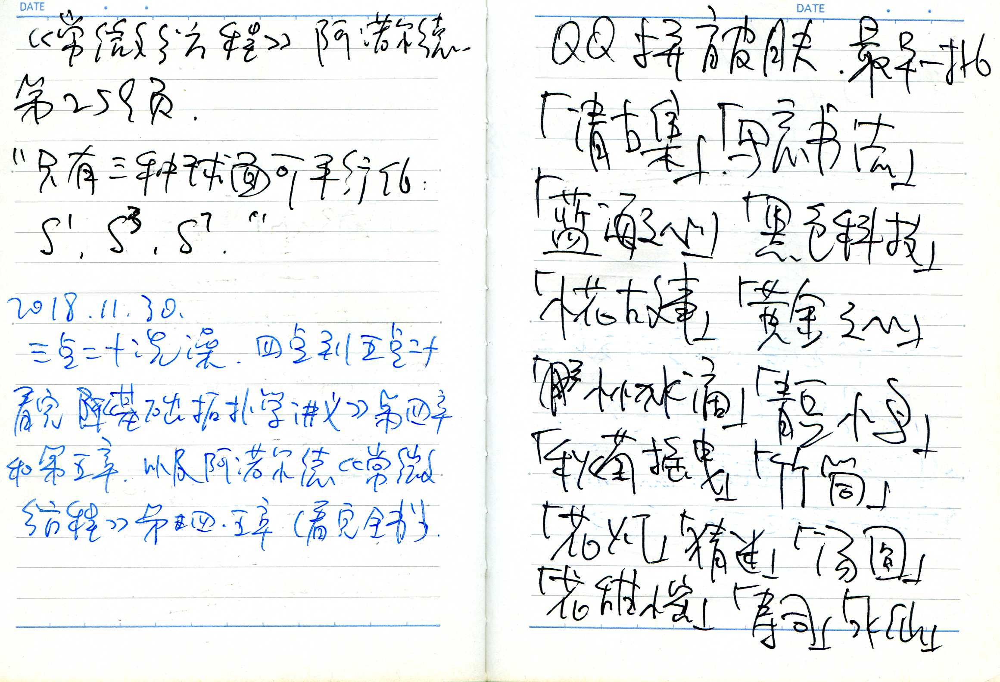

fanhan-inside
长话短说。
- 今天凌晨四点二十欠费断电，下午三点半充值来电。
- 手软脚软：手上使不上劲，握笔和敲键盘都费劲；脚下站不稳，浮肿到脚踝。
⸺目前的状况
自打一万块钱三罐天山雪蜜、四千五百块钱订购一年骆驼奶变成六罐山东清真罐头乃至七万供暖费之后，「家贼难防烧粮草」军事行动就已经开展了。我不信一向「消息灵通」的周边居民都不知道这事。就看拥军超市门口哥布林的表现⸺「当众痛饮“普京”」并且看见我就给「古拉格派出所」无间道打电话⸺明明就是「动员你家人举火自焚把你丫骗到穷」然后看热闹⸺社区居民在与哥布林闲谈时至少略有耳闻，通常是听着哥布林一边传播我的各种谣言一边吹牛哔如何运用各种人脉算计我，已经对我当前处境或者说全程旁观了（还有哥布林实时解说）我如何在黑白两道伙同家贼的共同努力下宁可一步一步走入现在的困境也不肯一步一步走上犯罪的道路之全过程见怪不怪了⸺早就被哥布林告知「那小子一定会被他爹骗成穷光蛋，不信你就等着看」。
⸺这些都是摄影棚的一部分。
细节不提了，有些现实经历作为现实主义创作素材比较合适，会在改编之后再发出来。
fanhan-inside
先改了本篇日志的备注，在个人博客站点上目录及日志页面上可见。
为啥现实经历要经过改编之后才能发出来呢？因为参考其它「文艺爱好者」的公开表态，这是一个浮躁的年代，苦大仇深的鸿篇巨著，人民群众已经看不下去了。偶尔有例外，在文艺氛围与学术氛围略微浓厚一点的话题当中，有网友说看了啥之后「上头」「意难平」，还被围观群众嘲笑为「入戏文青」。
同理可证，我自己的经历，在日记中复述一遍，自己看着都「上头」，化用到码字情节当中已经尽量戏剧化特别是喜剧化了⸺包括但不限于《设定集》《异闻录》以及其他中短篇⸺自己修改和深化构思的时候，再读一遍仍然「上头」。而「卖惨」从来都不是我的风格，活着不在乎身外之物以及他人观感，不影响自己就无所谓，但是死到临头就要干干净净乐乐呵呵的，不能让躲在摄像头和窃听器后的剧组如意算盘打响。
就说本篇日志，读者们看到标题之后「上头」么？尤其是稍微有一些社会经验之后？特别是与错综复杂的国际和国内局势结合起来理解？应景的要配合「统一教の出家人」之动向，判断每个「教徒」的政治和意识形态站队，到底是「保教不保国」还是「保家不保国」或者是「保教不保家」？如果一个挨一个判断工作量太大，还可以隔一个调查一个，抽样也差不多。
所以改了备注，刚好可以回答「没见过世面的中国籍汉族人」从常理出发所猜测的「真相」，其实与真正的涉及邪教、战后国际秩序、远东开国元勋或新朝元老……的真・真相相去十万八千里呢。
关于备注当中提到的事情之前谈笑风生过：
当时舆论氛围就那样，到现在都不过时，名著《钢铁侠是怎样炼成的》常读常新。
 乌克兰・沃伦
乌克兰・沃伦
对于市面上脑壳里只有红白两色液体的肌肉棒子口沫横飞的下半身话题，最近十年还是这老一套说法⸺盐吃多了的北京人不信就回家去问长辈，当年多少满口语录「拍婆子」的根红苗正忠君爱国童年才俊提起「保尔・柯察金」角色形象乃至其原型兼「作者」奥斯特洛夫斯基（生于罗刹帝国「边疆」乌克兰沃伦）生平相关读后感都一边念一边笑口称「大傻哔」，血脖子红卫兵哲合忍耶对此有什么意见和建议。
所以，就用当代娱乐至死的话语体系形容，当代政策是「逆练九阴真经」，无论《资本论》还是《共产党宣言》甚至「革命名著」，嘴上念一句经文，手上一定要反着干才行。
回到本篇日志主题，前情提要已经有权威机构认证的权威媒体报道了，就是「华尔街赌徒」血洗中丐股の南棒大佬「比尔・黄」相关内容，从去年初到现在网上「爆仓黄」段子有得是，这里不再重复。
而我只记录与「骆驼奶」「蚕丝被」相关的线索，无论是约谈家贼骚扰我的幕后黑手「幽州外景片场摄影棚导演」还是周边负责执行具体骚扰「拉电闸拔网线扎车胎堵钥匙眼投毒下药装修暖气管下水道塞杂物倒脏水」的军休所哥布林，活动规律都与金融新闻之间存在着统计上的相关性。
比方说「黄台吉转世灵童」，在日志＃152当中就提到的情报，而在＃154、＃156、＃158、＃159、＃210当中也提到过。最初还不知道「富歇转世灵童」真的姓「傅」，但已经知道「黄台吉转世灵童」真的姓「黄」了，并且与晋绥陕甘宁边区洗白的黑帮大佬、三五九旅供销社军休所考公上岸的城狐社鼠、新疆兵团染红的绿色基因这一堆毒贩都有联系。
fanhan-inside
继续举个例子论证为啥需要「改编」之后化用为情节才算「纪实文学」。
先从「真・日记」（类似之前的《真・流水帐》是写给自己，于本地备份素材情报生活记录和「好记性不如烂笔头」用的，就没打算发表）当中摘一段，就是昨天从午夜到停电那段时间，一字不改：
囧斋起居注・日记
2022年8月25日（木）晴
半夜十二点，泡一碗「今麦郎・一桶半・麻辣牛肉板面」加个卤蛋吃掉充饥。面饼100克，加配料139克，营养成分表（%）如下：
| 项目 |
面饼（100克） |
配料（39克） |
卤蛋（30克） |
| 能量 |
18% |
11% |
2.4% |
| 蛋白质 |
16% |
7% |
7.5% |
| 脂肪 |
4% |
34% |
4.8% |
| 碳水化合物 |
24% |
3% |
0.3% |
| 钠 |
5% |
169% |
9% |
这里顺便把之前的小香肠营养成分表一起备份下来，包装上的印刷内容都是按照「每100克」提供的，而产品本身⸺卤蛋30克，小香肠16克：
| 项目 |
能量 |
蛋白质 |
脂肪 |
碳水化合物 |
钠 |
| 卤蛋（每100克） |
8% |
25% |
16% |
1% |
30% |
| 卤蛋（产品30克） |
2.4% |
7.5% |
4.8% |
0.3% |
9% |
| 小香肠（每100克） |
25% |
25% |
72% |
4% |
66% |
| 小香肠（产品16克） |
4% |
4% |
11.52% |
0.64% |
10.56% |
然后在Obsidian「社区市场」当中乱转，装了一堆插件和主题。
最有趣的插件是「Fantasy Calendar」，预定义了七个比较流行的奇幻设定（以及本位面格里高利历用于对比），包括但不限于「被遗忘的世界」「艾伯伦」「灰鹰」模组，可以追加「事件」⸺现在正在用默认的「竖琴手同盟历法」⸺当然有另外一个插件以现实日历计算现实生活。
最有趣的主题则是「Bubble Space」，本身就是用第三方插件「Style Setting」做的，有配色和场景可选。虽然看上去卡通了点，但是屏幕几大块区域之间，甚至目录树内部的各个区域，辨识度都相当高。该花哨的时候可以花哨，该简洁的时候也能简洁，其实是很优秀的设计。
这时半夜三点了。这两天吃饱了，不过从昨天到今天都很累，起来就觉得很累，吃饱了还是很累，按说睡够了，但是困。
然后按照求全责备有备无患原则⸺虽然目前还没发现有人放风带节奏⸺上网查了查「今麦郎」的情报 。
就从今年以来在小卖部购买方便面的体验观察，至少今麦郎的「拉面范」以及以前的「老范家（零油炸）」这俩品牌旗下的各个产品是对标统一汤达人的高端系列，官网列出来的那些产品差不多都尝过，汤头都很好喝，并且面条「非油炸」⸺这是胜过汤达人之处。而「一桶半」系列还是味精料包，不过还有单独的酱包，比如烩面板面宽面之类「非油炸」面条，至少可以对标日清合味道（市面上出现的我吃过并列举过的那些），也有适合国人口味的独特之处。
而其它产品系列「大汤面」「乌冬面」「刀削宽面」「自热/冲泡米饭」「手打鲜粉」「粉丝馆」「蛋花汤」还没碰到过，如果按照已经尝到的产品决定先验分布猜测品质和口味对食客的体验差不多的话，这是一家有很多很好产品线的挺好的食品企业嘛。并且京东网购有售⸺河北企业在密云落户，北京当地有货是应该的。
写完上面这段话，正在卫生间解手，约四点二十分，断电了。
只有最后一句话是来电之后补上的，照着手写日记录入计算机而已。
再强调一遍，这是「日记」，理论上没有别人能看到，但就是正如《知乎问答№105：如果有第三次世界大战》当中提到的那样：
这里提醒注意：因为是日记内容，理论上外人看不到，里面出现什么样的脑洞和构思，都应该与现实无关。那么，谁把这些东西弄到现实当中去了，谁负责擦屁股，和我没关系。
之所以这么干，还是因为数学渣的职业习惯「不惮以最大的恶意揣测」，既然活跃网友追着我喷「老大哥在盯着你」「让你一辈子不痛快」，那么就要考虑到「老大哥」的能力。
也就是说，公开发言、站内短信、电子版日记、手写日记的「密级」是不一样的，能看到内容的人员级别也是不一样的，所以才需要「到什么山上唱什么歌，见什么人说什么话」，我在这四种场合选择的措辞和内容，都有明显（并不微妙）差别。
因此，当看到活跃网友应景讨论我的「手写版日记内容」还把黑锅扣到我头上脏水泼到我身上，顺便炫耀「有钱任性的贵种之性福生活」，肯定知道这「老大哥」大概是谁了嘛。一次不够就多来几次，三天不写手生，笔耕不辍的作用，就是让被从小骗到大从头骗到尾在开局两眼一抹黑一无所知的贝叶斯主义者逐步调整后验分布逼近真相喽。
以前可能读者不信，但是昨天由于停电，根本就没有什么「电子版」文档，抬杠曰「笔记本还能写几句」，但想发也发不出去吖。所以从我写了日记到出门遇到各种现实剧情，中间就是只有摄像头后的观众朋友与窃听器后的听众朋友在幽州外景片场摄影棚导演指挥下「演戏」。
再看扎根城乡结合部吉普赛社区军休所的通过「运作人脉」就可以24×7全方位巡查监视无死角的「晋绥陕甘宁边区洗白的黑帮大佬、三五九旅供销社军休所考公上岸的城狐社鼠、新疆兵团染红的绿色基因这一堆毒贩」还能怎么撒泼耍赖。
所以接下来就是「改编」了：
（出门之后）去的时候，过了小马路进入「葡萄架社区」铁门，迎面有个比我矮一头的中年妇女擦肩而过，低声说「这“毛”（或者是“曹”、“晁”）家你也别回来了」。没听清楚，看对方形象酷似冬季凌晨在同样的位置口称「滚回××（也没听清楚）去，北京不是你的家」之深绿羽绒服中年妇女⸺那次路上附近没有其它行人，肯定是在跟我说话，当然对方肯定不承认，宁可说是自言自语。
这是从日记当中摘了一段略改几个字之后的结果。这个「葡萄架社区」，就是2016年夏天晚上出门吃饭时碰上仨嗑多了药的精神恍惚童年才俊穿着文化衫迎面挑衅「有的人呢，就是没有自知之明」的地点。这三次公开谈笑风生时提到的场景，出现在同一个位置上，就连这两拨三次四个人行走方向都是统一的从东向西，从大马路走向小马路。
所以说这里应该是个窝点，是否也有个军休所我不知道，从来只是路过而已。但就看砥砺奋进十年来每次观察到的当地人渣浓度以及对外的渗透压的形象体现，里面埋伏的哥布林估计不比古拉格北里社区少。
解读很简单，就是因为《民以食为天与囧斋食谱（再续）》这篇当中提到了「拉面」「汤头」，并且最近确实有水军趁着全国「十步一岗五步一哨」的大好时机炒作过「料理包」「预制菜」「半成品食物」「速食便利食品」甚至具体到「方便面品牌」（不是我提到的这个）对吧？
所以按照多年来内化于心外化于行的职业习惯顺便「做做功课」，并没有公开掺和口水战，也没有公开发表出来，纯属私人感想。
但就是有「葡萄架社区」哥布林通过间谍设备看着人民群众日记当中提到正经的食品企业注册的「老范家」商标硬往我头上栽，接下来就是「家法从事」，晋绥陕甘宁或新疆出来个白胡子老毒贩拍桌子瞪眼，于是又到了本篇日志标题「被权威机构认证的户口本爹骗成穷光蛋」了是吧？
如果「葡萄架社区」的这帮潜伏在兲子脚下首善之区国际一流和谐宜居之都（准备复刻1976、1989两次「百万雄师冲广场」杀去偏殿夺了鸟位）经由大手情报机构培训「撒谎偷窃诈骗」技能的职业特务（还有全套间谍设备和技术支持）不肯负责，还能有谁应该为电信诈骗负责呢？
范某截图备份于此

再抄一段今天的日记，属于「后续追踪报道」，一字不改：
囧斋起居注・日记
2022年8月26日（金）阴转晴
五点四十泡一碗「今麦郎・一桶半・卤香牛肉板面」加个卤蛋吃掉充饥。这次的发现，方便筷子不再是「插入式」而是「拔出式」，也就是塑料制筷子套筒一端收窄，木制筷头从另一端提前插入，只需要从窄端拔出即可。方便用户很多，之前松动脱落掉进碗里就有好几次，我自己的亲身体验⸺想必其它用户也都有同感。
这是「一桶半」系列可不是「拉面范」「老范家」系列，是不是立刻又有剧本创作出来，出门碰上中年妇女迎面挑衅「我看这“范”家你还是甭回来了」呢？
总之，面饼100克，加配料143克的营养成分表（%）如下：
| 项目 |
能量 |
蛋白质 |
脂肪 |
碳水 |
钠 |
| 面饼（100克） |
18% |
16% |
4% |
24% |
5% |
| 配料（43克） |
13% |
7% |
41% |
3% |
17% |
| 卤蛋（30克） |
2.4% |
7.5% |
4.8% |
0.3% |
9% |
然后确定了一件事，Markdown当中表格的「格式化」，不是看上去版式美观大方就可以。因为空格多一个少一个在纯文本当中有区别，「源代码」更新与否无法分辨（不排除「智能」的运用正则表达式的「格式化文本专用」源代码管理系统）。既然当代Markdown编辑器可以实时渲染，那么就应该把「格式化」确定为每个「<td></td>」对应的「cell」内部距离分界竖线之间有且只有一个空格才算合理并且无歧义。
昨天又碰上「葡萄架社区」挑衅，心里窝火是肯定的，但还是就事论事没有搞啥「拉面扩大化」。
再抄一段日记，还是一字不改：
囧斋起居注・日记
中午十二点三十五借着新烧开一壶热水的时机泡碗方便面，手上没握力，内盖封纸都撕不开了，用牙咬着扯，险些扯散，掉了几个料包飞出几根面条。
中午十二点五十到下午一点零五分，吃了这一碗「今麦郎・拉面范〇油炸・招牌叉烧豚骨拉面」，面饼75克，加配料共128克，放了一个卤蛋30克，营养成分表（%）如下：
| 项目 |
能量 |
蛋白质 |
脂肪 |
碳水化合物 |
钠 |
| 面饼（75克） |
14% |
10% |
2% |
20% |
33% |
| 配料（53克） |
11% |
14% |
28% |
3% |
122% |
| 卤蛋（30克） |
2.4% |
7.5% |
4.8% |
0.3% |
9% |
刚才吃的这款面，在日记中官网链接直接给出来了，读者们可以自己去看，或者已经品尝过相关产品的读者可以对照着自己的体验看我写的日记，到底是不是「纪实文学」，涉及具体企业与产品的评价有什么夸大其辞之处。我的码字态度与那帮收了钱或自带干粮的中专混混，以及包括但不限于「葡萄架社区」的黑窝点扎堆聚集为非作歹的间谍特务卧底有什么不一样。
fanhan-inside
最后写几句结束本篇日志，就用我人生转折点「莫名其妙的面瘫」为例对照「改编情节」和「原始档案」，读者们可以体会一下「艺术来源于生活又高于生活」与「无一字无来历」之间辩证的统一，顺便对我个人的职业习惯与码字操守做出一些个人的评价。
先是「改编情节」，已经谈笑风生过了，最近两次是日志「＃246」「＃251」，都查找替换了关键字。
然后是「原始档案」，此处备份今天刚才的「真・日记」，其中引用了2010年便笺本上记录的「真・日记の草稿」：
囧斋起居注・日记
2022年8月27日（土）晴
吃完面大约半夜十二点二十分，先补充记述日记。
虽然身上（确切的说是双手双脚）疼于是睡不着（外加躯干不舒服且脑壳有些昏沉），不过手上的感觉似乎好了一些（腿脚还没有，脚脖子还肿着，屈伸有些费劲），至少前臂（肌肉撕裂？肌腱拉伤？）勉强可以运动了，虽然还是几乎没有握力。
抓笔写几个字的时候感觉也好点了，这时看着当草稿本用的充沛着各种笔墨色彩的一直记录杂事的A6小册子⸺上面偶尔有几滴水，凡是用染料墨水钢笔的字迹立刻就渲开了模糊不清⸺这是多年前就有的经验教训，从来没忘过：手写的正式文本或者用碳素、颜料（以及干燥后防光防水的染料）墨水，或者用中性、油性圆珠笔。
然后往前翻，小册子最开始是出差时会议记录，用的应该是一根百乐多色笔「HI-TEC-C COLETO」⸺黒、天蓝、红三种颜色的笔芯在其中⸺不同人物的发言用不同颜色区分，每一页上面都有一条红色斜线删除记号，最后红笔标注「2009-08-03整理完毕」。
再往后几页是个人生活记录和消费流水帐，就是面瘫那几天，最后标注「2010/4/13整理完毕」应该是已经写进「システム手帳」当中的手写日记当中去了，印象里当时还没有正式的「电子版日记」。保险起见，这里再次备份如下：
| 日期 |
项目 |
金额 |
备注 |
| 周五 |
晚 |
￥46 |
|
| 周六 |
午 |
￥44 |
|
|
购物 |
￥127.70 |
|
| 周日 |
挂号（京仁） |
￥1 |
|
|
药费 |
￥28.30 |
|
|
出租车来回 |
￥26 |
|
|
理发 |
￥20 |
|
|
晚饭 |
￥18 |
卤煮￥12、百合粥￥6 |
| 周一 |
出租车 |
￥24 |
|
|
挂号 |
￥3 |
|
|
治疗 |
￥743.87 |
|
|
煎饼 |
￥4 |
|
|
午饭 |
￥18 |
（和爹） |
|
晚饭 |
￥20 |
卤煮，加一份白肉 |
|
药品 |
￥42.50 |
维生素 |
周六早上起来，大半张脸更严重了，终于确定是面瘫。上午翻了一部分辅音，然后去吃午饭。回来后睡午觉，连中超都没看。晚上出门购物，回来后继续翻译，完成辅音后上传，排版。
周日先去定点的京仁看病，走进内科，大夫建议转院（回家上网搜，发现京仁中医科开了个“面瘫专题”，估计内科大夫是知道内幕的）。然后去友谊医院，发现没有号了，于是回家。爹来，谈谈情况，然后我去理发。过一会儿爹和娘都来了，带血压计，我「90/130」。二老走后我睡觉，四点到五点半走到洋桥南吃卤煮，回来洗澡上线，给同事发信请假。
就是面瘫那几天，连在龙空参加「百年翻译运动」的细节都写了。不知扫描仪还能用否，这几页需要扫描下来备份，留作永远的纪念。
还是一字不改，关键字其实没那么敏感，在龙空与网友谈笑风生的时候早就提出了【洋桥信经】：「玻尔兹曼上帝面前魂魂平等」，相关个人信息本来就没藏着掖着。话都说到这份上了，没啥好屏蔽的。我一直都很厚道，总是给周边各色人等哪怕是头顶生疮脚底流脓坏透了的人渣留点面子，可是那帮和这帮接受过大手情报机构下属大手名校正规培训「撒谎偷窃诈骗」课程专门盯着我算计的人渣呢？
最后把本来本篇日志的备注也是围绕本篇日志主题进行码字的最初意向「外一篇：《盐吃多了的北京人会变成燕么虎吗？》」简单提一句：
看上面备份的大批营养成分表也知道，各种方便食品当中，只有「钠」总是摄入超标。于是应该「全球遭瘟」然后大手医疗机构建议「十步一岗五步一哨」外防输入内防反弹，只能通过智能手机用微信和/或支付宝购买网络水军炒作的「权威机构食药监局认证」的商品。
fanhan-inside
补充说明，这段不是画蛇添足或狗尾续貂，而是「无一字无来历」的职业习惯，因为手头刚好还有个扫描仪吃灰十几年。
我在码字当中提到自己「曾经」如何如何，都是实话实说，没有夸张之处，很多「读者」以己度人经常嗤之以鼻，于是网上和现实中总有那许多关于我的谣言流传。所以后来我尊敬的称赞它们「以（通权达变善假于物の）君子之心度（言必信行必果硁硁然の）小人之腹」。
长话短说，扫描仪还能用，刚翻出来插上台式机装好驱动，于是上述「真・日记」当中绘声绘色的形容「2010年手写备忘录」的相关图片如下：
范某扫描备份于此





为了理解这五张图片，把上述「真・日记」的后续几段补上：
囧斋起居注・日记
继续回顾便笺本备忘录小册子，再往后就是「钦定缓则大数据」了也，从2017年6月9日开始，钦定死机之前正在干什么，都记录下来供分析「统计上的相关性」用。这个攒了好多页，最后一条是「2018.2.15 20:46 华尔街见闻 蓝屏」。
再往后的一页，是恶补数学的内容。上半页用黑色中性笔写着：
《常微分方程》阿诺尔德 第259页 “只有三种球面可平行化：S1、S3、S7”
下半页用蓝色中性笔写着：
［2018.11.30］三点二十洗澡，四点到五点二十看完了《基础拓扑学讲义》第四章和第五章，以及阿诺尔德《常微分方程》第四、五章（看完全书）
再往后就到了今年，大约六月底，记录的是QQ拼音的皮肤名称。再往后都是这些天随意手写的草稿。现在プラチナ台式红笔杆当中的红墨胆已经见底了，换上另外一支几乎见底的，盒里红墨胆还有好几支存墨稍微多一点或曰十几年来挥发得稍微慢一点的⸺钢珠堵口还是密封性不太好。
对比之下，2010年买的惠普「OfficeJet Pro 8000」打印机只用过几次，虽然外表吃灰积尘但简直是九点五成新，但是需要更换墨盒清洗喷头才能继续使用，目前我这里的情况是无法直接修复了。
就事论事的感想就是俗语「破家值万贯」，如果当年没攒下这许多「破烂」，事到临头连辗转腾挪的余地都没有。虽然九成九点五成的中古二手货「根本不值钱」，但是早说过了我从来就没打算卖过这些「家用办“公”用品」或者直说「OfficeJet」之类商标在我这里的翻译就是「书房或曰“办私室”设备」。